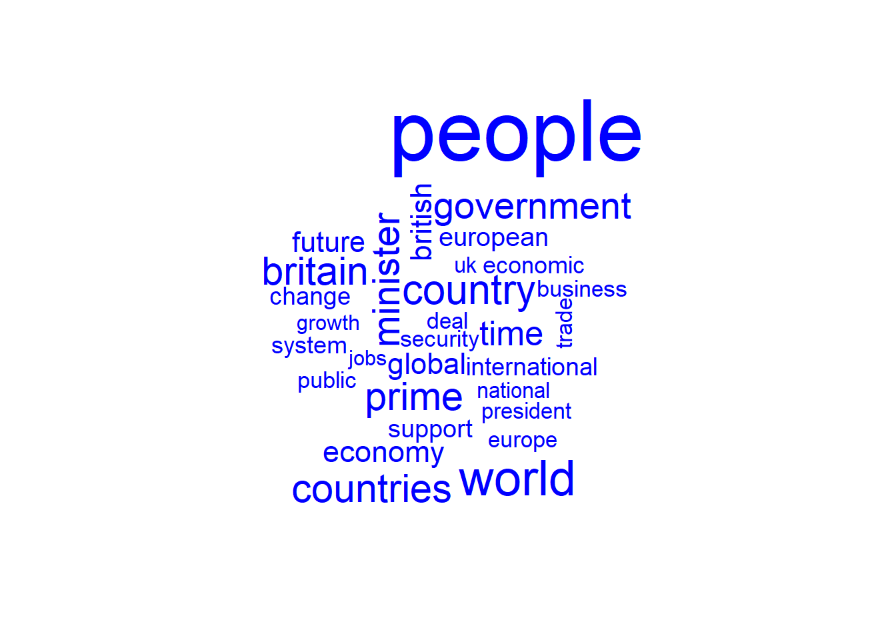

In this session, we need to install the following package:
wordcloud to create pretty word clouds, visualize differences and similarity between documents.install.packages("wordcloud")# Load the packages that we will need for this session
library(tidyverse)
library(tidytext)
library(wordcloud)# Read the tidy data from the previous session
data <- read.csv("tidydata.csv")# Do some Quick Cleaning
data <- data %>%
select(-X)
data$date <- as.Date(data$date,"%Y-%m-%d")
data$speaker <- as.factor(data$speaker)One way we can visualize text is to look at word frequencies and find the most common words. This is even more important when looking across documents.
data("stop_words")
top_single_words <- data %>%
anti_join(stop_words) %>%
filter(str_detect(word, "^it|^we|^that|^don|[^(Aa-zZ|\\-|')]", negate = TRUE))%>%
count(speaker, word,sort=TRUE) %>%
group_by(speaker) %>%
top_n(10) %>%
ungroup() %>%
mutate(word2 = fct_reorder(word,n))## Joining, by = "word"## Selecting by nggplot(top_single_words, aes(x=word2 , y=n, fill = speaker)) +
geom_col()+
guides(fill = "none") +
labs(y = "Frequency", x = NULL,
title = "10 most frequent words by speaker") +
facet_wrap(vars(speaker), scales = "free", nrow=3) +
theme_bw() +
coord_flip() Another method to order columns propoerly within each facet.
top_single_words <- data %>%
anti_join(stop_words) %>%
filter(str_detect(word, "^it|^we|^that|^don|[^(Aa-zZ|\\-|')]", negate = TRUE))%>%
count(speaker, word,sort=TRUE) %>%
group_by(speaker) %>%
top_n(10) %>%
ungroup() %>%
mutate(word3 = reorder_within(word, n, speaker))## Joining, by = "word"## Selecting by nggplot(top_single_words, aes(x=word3 , y=n, fill = speaker)) +
geom_col()+
guides(fill = "none") +
labs(y = "Frequency", x = NULL,
title = "10 most frequent words by speaker") +
facet_wrap(vars(speaker), scales = "free", nrow=3) +
theme_bw() +
coord_flip() +
scale_x_reordered()We can also look at pairs of words instead of single words. To do this, we need to change a couple arguments in unnest_tokens(), but otherwise everything else stays the same.
# We need to pre-process the raw data
raw_data <- read.csv("speeches_uk.csv",
encoding="UTF-8")# Tokenization is now done differently
speeches_new <- raw_data %>%
mutate(text = str_replace_all(text,"<.*?>",""))%>%
mutate(text = str_trim(text)) %>%
mutate(text = tolower(text)) %>%
unnest_tokens(bigram, text, token = "ngrams", n = 2)In order to remove stopwords, we need to split the bigram column into two columns (word1 and word2) with separate(), filter() each of those columns, and then combine the word columns back together as bigram with unite()
bigrams <- speeches_new %>%
separate(bigram, c("word1", "word2"), sep = " ") %>%
filter(!word1 %in% stop_words$word,
!word2 %in% stop_words$word) %>%
filter(str_detect(word1, "^it|^we|^that|^don|[^(Aa-zZ|\\-|')]", negate = TRUE),
str_detect(word2, "^it|^we|^that|^don|[^(Aa-zZ|\\-|')]", negate = TRUE)) %>%
# Put the two word columns back together
unite(bigram, word1, word2, sep = " ")Now, let’s plot the bigrams.
top_bigrams <- bigrams %>%
# Count all the bigrams by each speaker
count(speaker, bigram, sort = TRUE) %>%
# Keep top 10
group_by(speaker) %>%
top_n(10) %>%
ungroup() %>%
# Make the bigrams an ordered factor so they plot in order
mutate(bigram2 = reorder_within(bigram, n, speaker))## Selecting by nggplot(top_bigrams, aes(x=bigram2 , y=n, fill = speaker)) +
geom_col()+
guides(fill = "none") +
labs(y = "Frequency", x = NULL,
title = "10 most frequent bigrams by speaker") +
facet_wrap(vars(speaker), scales = "free", nrow=3) +
theme_bw() +
coord_flip() +
scale_x_reordered()We use the wordcloud package.
wordcloud_data <- data %>%
anti_join(stop_words) %>%
dplyr::filter(str_detect(word, "^it|^we|^that|^don|[^(Aa-zZ|\\-|')]", negate = TRUE))%>%
count(word)## Joining, by = "word"wordcloud(
words = wordcloud_data$word,
freq = wordcloud_data$n,
max.words = 30,
colors = "blue"
)